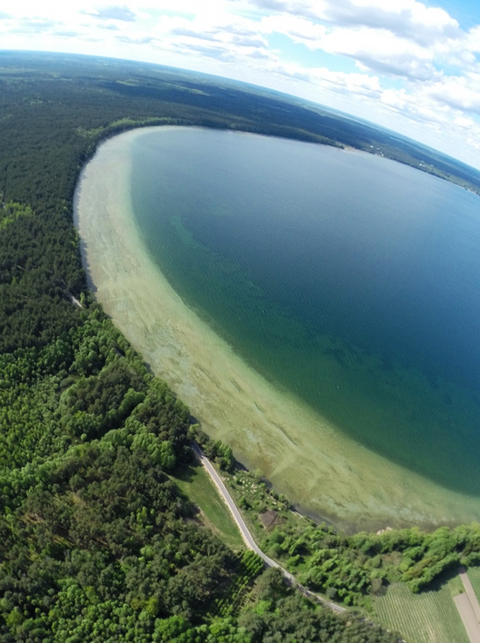

Использование фонового изображения (Упр 9.2)
Стоит учитывать то, что по умолчанию, если картинка будет меньше страницы,
то она размножится на весь экран:
Добавление изображений и свойст к ним (Упр 9.3-9.7)
Картинка без дополнительных свойств

Ширина 300 пикселя (упр 9.3):
Ширина 80%:
Отступы со всех сторон 25 пикселей (упр 9.4):
Выравнивание изображения по отношению к тексту (упр 9.5):
Картинка слева от текста.
Картинка справа от текста.
Вместо не найденой картинки отображение текста:

Изображиние в качестве ссылки:
Звук и видео на веб-страницах (Упр 9.8-9.10)
Добавление звука:
Добавление видео:
Видео с ютуба: